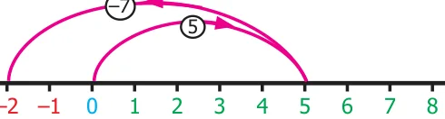
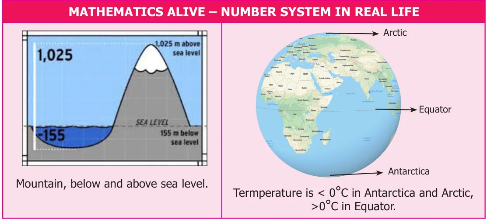

In class VI, we studied how to compare and arrange integers. Now, let us try to add and subtract integers. We know \(7 - 5 = 2\). But, what is \(5 - 7\)? Let us try to take away 7 from 5 using the number line. As the integers on the number line increases from left to right, we should move 7 units to the left of five to do this subtraction.

\(- 8 - 7 - 6 - 5 - 4 - 3 - 2 - 1\) Fig. 1.3
Is it really necessary to do this? Have you come across any such situations in life? Yes, there are situations like increase or decrease in temperature, amount deposited and withdrawn from an account, profit and loss in a business are all instances where integers are involved.
